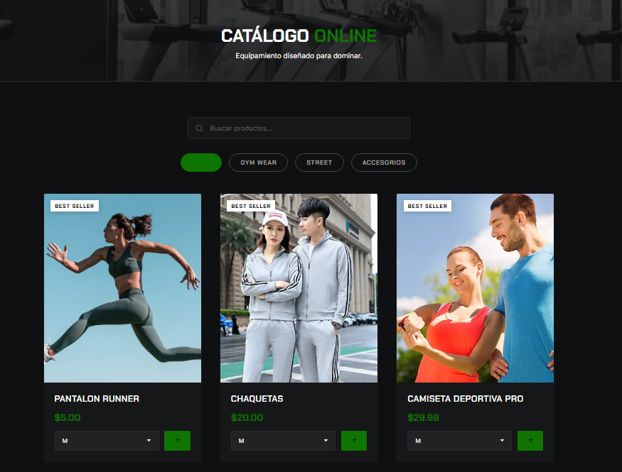
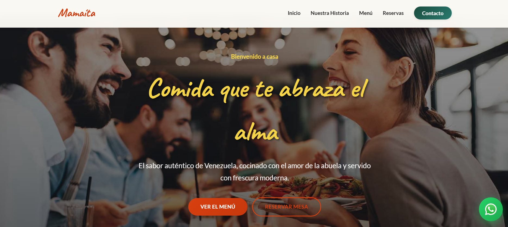
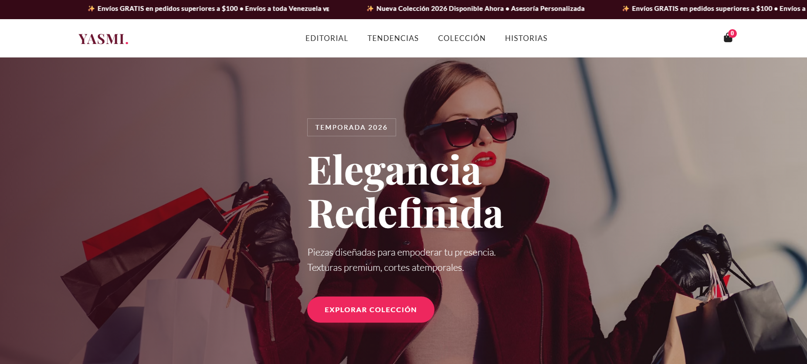

Ingeniero de Sistemas especialista en el desarrollo de arquitecturas web con WordPress, PHP y MySQL. Construyo sitios escalables que rinden y convierten.
Muchos negocios pierden clientes potenciales porque su sitio web es lento, inseguro o difícil de gestionar. No necesitas solo un diseñador; necesitas un ingeniero que entienda la lógica detrás de un sistema que funcione 24/7.
Aplico una mentalidad de ingeniería a cada línea de código. Ya sea un sitio corporativo en WordPress o una aplicación web personalizada en PHP/MySQL, mi enfoque garantiza rendimiento y seguridad de alto nivel.
Soluciones basadas en arquitectura sólida, no en plantillas frágiles.
Desarrollo de temas y plugins personalizados rápidos y seguros. Cero dependencia de constructores lentos.
Creación de lógica de negocio compleja, gestión eficiente de bases de datos y desarrollo de APIs robustas.
Interfaces limpias, responsivas y optimizadas (HTML, CSS, JS) para tiempos de carga ultra rápidos.
Arquitectura de software, optimización de servidores, protocolos de seguridad y mantenimiento proactivo.



Descubre si tu sitio actual cumple con los estándares de velocidad, seguridad y SEO que exigen las empresas líderes en 2026.
Ver mi Checklist GratisHablemos sobre tu proyecto. Envíame un mensaje directo a WhatsApp y te responderé a la brevedad.